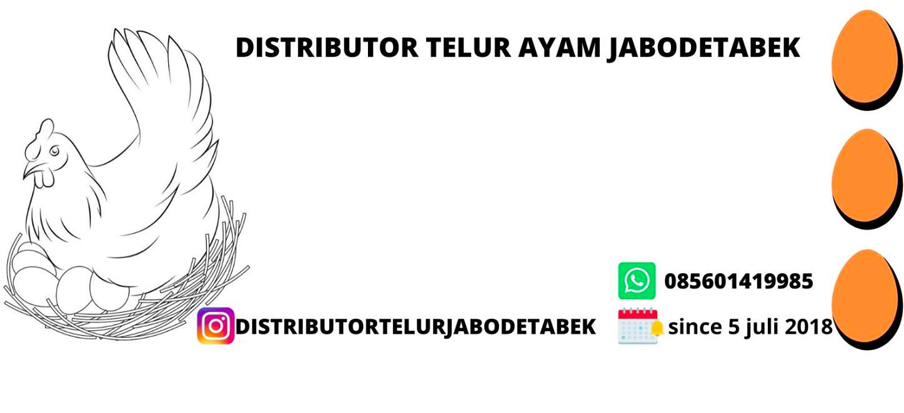

Informasi Harga
DAFTAR HARGA ECER TELUR AYAM JABODETABEK 17 OKTOBER 2020
| Jakarta Timur | Jakarta Barat | Jakarta Selatan | Jakarta Utara | Jakarta Pusat |
|---|---|---|---|---|
| Pasar Pramuka:24.000/kg | Pasar Grogol:24.000/kg | Pasar Minggu:21.000/kg | Pasar Pluit:24.000/kg | Pasar Paseban:24.000/kg |
| Pasar Jatinegara:24.000/kg | Pasar Glodok:23.000/kg | Pasar Mayestik:25.000/kg | Pasar Kalibaru:23.000/kg | Pasar Johar Baru:22.000/kg |
| Pasar Cibubur:23.000/kg | Pasar Tomang Barat:24.000/kg | Pasar Cipete:22.000/kg | Pasar Koja Baru:22.000/kg | Pasar Cempaka Putih:24.000/kg |
| Pasar Cijantung:23.000/kg | Pasar Cengkareng:24.000/kg | Pasar Pasanggrahan:24.000/kg | Pasar Sunter Podomoro:23.000/kg | Pasar Jembatan Merah:25.000/kg |
| Pasar Rawamangun:22.000/kg | Pasar Kalideres:22.000/kg | Pasar Pondok Labu:24.000/kg | Pasar Rawa Badak:25.000/kg | Pasar Pal Merah:22.000/kg |
| Pasar Pulo Gadung:22.000/kg | Pasar Jembatan Lima:20.000/kg | Pasar Tebet Barat:25.000 | Pasar Kelapa Gading:22.000/kg | Pasar Gondangdia:26.000/kg |
| Pasar Kramat Jati:23.000/kg | Pasar Pos Pengumben:21.000/kg | Pasar Lenteng Agung:23.000/kg | Pasar Anyer Bahari:24.000/kg | Pasar Petojo Ilir:24.000/kg |
Layanan Pelanggan
Bagi anda pengecer telur ayam,pemilik pabrik roti,pemilik warteg,pemilik restoran dan yang berbisnis berbahan telur ayam. kami hadir untuk melayani anda dengan harga murah dan telur fresh, Silahkan isi form untuk mendaftar jadi pelanggan kami.